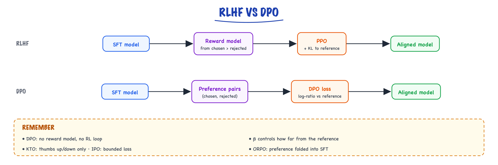

DPO & preference optimization // Fine-tuning & alignment
The RLHF outcome with a supervised loss, and KTO, IPO and ORPO.
01 — At a glance

Both start from an SFT model and preference pairs. RLHF trains a reward model and runs RL with a KL leash; DPO gets the same target with one supervised loss.
02 — DPO — preference optimization without the RL
DPO's insight: under RLHF's own assumptions, the optimal policy can be written in closed form — so you can skip the reward model and the RL loop, and train directly on preference pairs with a supervised loss.
Recall from in an earlier topic that RLHF's KL-constrained objective has a known optimum: π*(y|x) ∝ π_ref(y|x)·exp(r(x,y)/β). DPO simply inverts it — solve for the reward: r(x,y) = β·log(π(y|x)/π_ref(y|x)) + const. Substitute that into the Bradley–Terry preference likelihood and the reward model cancels out of the equation entirely. What's left is a loss on the policy itself, computable from four log-probabilities per pair. The model is secretly its own reward model; DPO trains it as one.
03 — The loss (read it slowly once)
for each pair (prompt x, winner y_w, loser y_l): L_DPO = −log σ( β · [ log π(y_w|x)/π_ref(y_w|x) − log π(y_l|x)/π_ref(y_l|x) ] ) meaning: raise the winner's probability and lower the loser's — RELATIVE to a frozen reference model (the implicit KL leash), with β controlling how hard you push.
Notice the gradient behaves sensibly: the update is weighted by how wrong the model currently is about the pair (σ of the negated margin), so pairs the model already ranks correctly contribute little, and confidently-wrong pairs dominate. And the ratios against π_ref mean "make the winner likelier than the reference did" — an absolute anchor that stops the policy from collapsing probability mass onto a few phrasings.
One ordinary training run. Standard supervised infra. No reward model, no PPO, no four-models-in-memory — two models (policy + frozen ref), and with adapter tricks effectively one. That's why it won by default for open-model alignment.
04 — The complete run (TRL, QLoRA-compatible)
import torch from datasets import load_dataset from transformers import AutoModelForCausalLM, AutoTokenizer from peft import LoraConfig from trl import DPOTrainer, DPOConfig SFT = "your-org/triage-8b-sft" # ALWAYS start from your SFT model: tok = AutoTokenizer.from_pretrained(SFT) # DPO refines preferences, it does model = AutoModelForCausalLM.from_pretrained( # not teach the task. SFT, torch_dtype=torch.bfloat16, device_map="auto") # ── dataset: one row per pair. TRL's expected schema. ──────────────────────── # {"prompt": "...", "chosen": "...", "rejected": "..."} # (conversational form also works: prompt/chosen/rejected as messages lists — # then TRL applies the chat template for you. Use ONE form consistently.) pairs = load_dataset("json", data_files="pairs.jsonl")["train"] pairs = pairs.train_test_split(test_size=0.05, seed=42) # with a PEFT adapter, ref_model=None is doubly cheap: the "reference" is just # the same base with the adapter DISABLED — no second copy in memory at all. peft_cfg = LoraConfig(r=16, lora_alpha=32, lora_dropout=0.05, target_modules=["q_proj","k_proj","v_proj","o_proj", "gate_proj","up_proj","down_proj"], task_type="CAUSAL_LM") args = DPOConfig( output_dir="triage-dpo", beta=0.1, # the knob — see the sweep table below num_train_epochs=1, # DPO overfits fast; 1 epoch default per_device_train_batch_size=2, gradient_accumulation_steps=8, # effective batch 16 pairs learning_rate=5e-6, # NOTE: ~10–50× lower than SFT LRs; lr_scheduler_type="cosine", warmup_ratio=0.1, # 5e-7–5e-6 is the range max_length=2048, max_prompt_length=1024, bf16=True, gradient_checkpointing=True, logging_steps=10, eval_strategy="steps", eval_steps=100, ) trainer = DPOTrainer(model=model, ref_model=None, # ref auto-handled (frozen) args=args, peft_config=peft_cfg, train_dataset=pairs["train"], eval_dataset=pairs["test"], processing_class=tok) trainer.train() trainer.save_model("triage-dpo/adapter") # ── what to watch in the logs ──────────────────────────────────────────────── # rewards/accuracies : fraction of pairs where implicit reward ranks w > l. # Should climb from ~0.5 toward 0.7–0.9. Stuck at 0.5? # Your pairs are noise. Instantly 0.99? Pairs are trivial # (or leaked) and the model will learn nothing useful. # rewards/margins : β·(logratio_w − logratio_l). Growing steadily is good; # exploding means over-optimization — see gotchas. # NOT eval loss alone: a lower DPO loss does not guarantee a better chatbot. # The gate is the win-rate harness below.
05 — Choosing β (and how to sweep it)
β plays the same role as RLHF's KL coefficient, inverted in feel: it scales the log-ratio margin inside the sigmoid, so small β lets the policy drift far from the reference before the loss saturates, and large β keeps it pinned close. Sweep it — it's one config field — but sweep it like this: 3 short runs, same data, β ∈ {0.05, 0.1, 0.3}, judged by win-rate + regression probe (never by loss, which isn't comparable across β).
| β | Behavior | Reach for it when |
|---|---|---|
| 0.01–0.05 | aggressive movement; big style shifts; highest reward-hacking/forgetting risk | large clean pair sets; the SFT model is far from target behavior |
| 0.1 | the standard default; visible improvement, modest drift | start here, always |
| 0.3–0.5 | conservative nudge; small win-rate gains, minimal regression | small/noisy pairs; safety-adjacent tuning; base model already good |
Illustrative sweep outcome for the triage assistant (2K pairs): β=0.05 → 71% win-rate vs SFT but the regression probe drops 6 points (over-styled, verbose); β=0.1 → 66% win, regression flat; β=0.3 → 58% win, regression flat. You ship β=0.1. That shape — an interior optimum once you score regressions too — is the typical result.
06 — Building pairs from production logs
The highest-leverage DPO trick: you're already generating preference data every day. Explicit thumbs, edits (user rewrote the model's draft = rejected/chosen in one event), retries, escalations, resolved-vs-reopened tickets — all of it converts to pairs.
import json, hashlib from collections import defaultdict def iter_events(path): with open(path) as f: for line in f: yield json.loads(line) # strategy 1: RETRY pairs — user hit "regenerate", then accepted the 2nd answer. # → (prompt, accepted) beats (prompt, regenerated-away) # strategy 2: EDIT pairs — user edited the draft before sending. # → edited version is chosen, original is rejected. STRONGEST signal: # same prompt, same intent, a human wrote the delta. # strategy 3: OUTCOME pairs — same prompt template, one convo resolved, # a near-identical one escalated → weak, use only with volume + care. def make_pairs(events): by_convo = defaultdict(list) for e in events: by_convo[e["conversation_id"]].append(e) for convo in by_convo.values(): convo.sort(key=lambda e: e["ts"]) for prev, nxt in zip(convo, convo[1:]): if nxt["type"] == "retry" and nxt.get("accepted"): yield {"prompt": prev["prompt"], "chosen": nxt["response"], "rejected": prev["response"], "source": "retry"} elif nxt["type"] == "user_edit": yield {"prompt": prev["prompt"], "chosen": nxt["edited_text"], "rejected": prev["response"], "source": "edit"} def hygiene(pairs): seen = set() for p in pairs: # (1) drop degenerate pairs: identical or near-identical texts if p["chosen"].strip() == p["rejected"].strip(): continue # (2) LENGTH-BALANCE: raters-by-behavior prefer longer too. Unchecked, # your model learns "longer = better" and bloats. Keep |Δlen| small. lw, ll = len(p["chosen"]), len(p["rejected"]) if abs(lw - ll) / max(lw, ll) > 0.5: continue # (3) dedupe on prompt — one pair per prompt, or hot prompts dominate h = hashlib.sha1(p["prompt"].encode()).hexdigest() if h in seen: continue seen.add(h) # (4) privacy/PII scrub hook goes HERE before anything is persisted yield p pairs = list(hygiene(make_pairs(iter_events("assistant_events.jsonl")))) print(f"{len(pairs)} pairs; sources:", {s: sum(p['source']==s for p in pairs) for s in {'retry','edit'}}) with open("pairs.jsonl", "w") as f: for p in pairs: f.write(json.dumps(p) + "\n") # then: human-spot-check 100 random pairs BEFORE training. Ten minutes of # reading catches the systematic garbage (e.g. retries caused by latency, # not quality) that no filter will.
07 — Evaluating the aligned model — a win-rate harness
The only meaningful DPO metric is: does a judge (ideally humans, practically an LLM with position-bias control) prefer the new model's answers on held-out prompts? Plus a regression suite. Here's the minimal honest harness:
import json, random, asyncio from openai import AsyncOpenAI # judge via any OpenAI-compatible endpoint judge = AsyncOpenAI() JUDGE_MODEL = "your-strong-judge" RUBRIC = """You compare two assistant answers to the same prompt. Judge on: correctness first, then completeness, then concision. Long answers are NOT better. Reply with exactly one letter: A or B.""" async def judge_once(prompt, ans_a, ans_b): r = await judge.chat.completions.create( model=JUDGE_MODEL, temperature=0, max_tokens=1, messages=[{"role":"system","content":RUBRIC}, {"role":"user","content": f"PROMPT:\n{prompt}\n\nANSWER A:\n{ans_a}\n\nANSWER B:\n{ans_b}"}]) return r.choices[0].message.content.strip().upper() async def compare(prompt, new_ans, old_ans): # position-swap: judge twice with A/B flipped; count only consistent votes. v1 = await judge_once(prompt, new_ans, old_ans) # new is A v2 = await judge_once(prompt, old_ans, new_ans) # new is B if v1 == "A" and v2 == "B": return "new" if v1 == "B" and v2 == "A": return "old" return "tie" # judge flip-flopped async def main(): rows = [json.loads(l) for l in open("eval_generations.jsonl")] # rows: {"prompt":…, "new":…, "old":…} — generate both BEFOREHAND with # identical sampling params (temp, max_tokens), or you're measuring configs. results = await asyncio.gather(*[compare(r["prompt"], r["new"], r["old"]) for r in rows]) n = len(results) wins = results.count("new"); losses = results.count("old") ties = results.count("tie") print(f"win {wins/n:.1%} lose {losses/n:.1%} tie {ties/n:.1%} (n={n})") # report win-rate EXCLUDING ties too; and n must be ≥200 for ±~7% CI. # Gate: ship if win-rate > 55% AND regression suite is flat. asyncio.run(main())
Two integrity rules. First, the judge must never be the model being evaluated (self-preference bias is strong), and if the judge shares a family with one side, note it. Second, run your capability regression suite (Fine-tuning, LoRA & QLoRA) on the DPO checkpoint — preference tuning quietly moves things you weren't looking at, and the win-rate prompt set won't catch it.
08 — The family
| Method | Twist | Use when |
|---|---|---|
| DPO | the closed-form original | default; you have clean pairs |
| IPO | bounded objective, less overfitting to pairs | small/noisy preference sets |
| KTO | needs only 👍/👎 per answer, not pairs | you have thumbs data, not comparisons |
| ORPO | folds preference into SFT — one stage, no ref model | simplicity; skip separate SFT |
| SimPO | reference-free, length-normalized margin | memory-tight; fighting length bias |
| Online DPO / PPO | fresh samples scored during training | when offline pairs go stale vs the improving policy |
09 — DPO vs RLHF (PPO) — the decision, expanded
| Dimension | DPO | PPO-style RLHF |
|---|---|---|
| Infra | supervised trainer, 1–2 models in memory; QLoRA-friendly on one GPU | 3–4 models + a generation engine inside the training loop; multi-GPU |
| Data it consumes | static offline pairs | any reward source: RM, verifiers, unit tests, tool outcomes |
| Exploration | none — learns only from pairs you already have; can't discover better answers than exist in the data | policy samples and improves on-policy — can exceed its data |
| Off-policy drift | pairs sampled from an old model slowly mismatch the improving policy; refresh pairs or go online-DPO | on-policy by construction |
| Stability / tuning | stable; 2–3 knobs (β, LR, epochs) | notoriously touchy; many interacting knobs |
| Reward hacking surface | smaller (implicit reward, KL-anchored) but real: over-trained DPO drops loser and winner likelihood, drifting off-distribution | larger — RM exploitation is the central failure |
| Verifiable/objective tasks (math, code, agents) | awkward fit — you'd binarize rich reward into pairs, losing signal | the right tool (RLVR/GRPO); this is how reasoning models are trained |
| Team & budget | one engineer, a weekend, one A100/consumer GPU | a team, weeks, a cluster |
| Verdict | default for style/preference/chat alignment from logged data | reserve for verifiable rewards or frontier-scale alignment |
10 — The production "RL flywheel" (what companies usually mean)
production interactions → capture outcomes (resolved? escalated? thumbs? edits?) → mine failures and wins → build preference pairs + eval cases → DPO/SFT on wins; prompt/tool/retrieval fixes for systematic failures → offline eval gate → canary → ship → repeat
Most "we do RL from usage" claims are this loop — data engineering + DPO — not live PPO. Building the signal capture and eval gates is 80% of the work; the training run is the easy 20%. Cadence intuition: teams running this well retrain monthly-ish, with each cycle consuming a few thousand mined pairs; the eval gate (win-rate + regression + safety probes) is what makes the loop safe to automate.
Gotchas
- Preference data quality is everything — noisy/contradictory pairs teach mush. Spot-read 100 pairs before every run; if you can't tell why chosen beat rejected, neither can the model.
- Length bias (raters prefer longer → model bloats). Length-balance pairs at mining time and check mean output length before/after training; a +30% length jump with flat win-rate is a hack, not a win.
- DPO can lower BOTH probabilities. The loss only cares about the margin, so over-training drives down the winner's likelihood too and the policy drifts somewhere neither answer lives. Symptoms: margins exploding, generations turning degenerate. Fix: 1 epoch, low LR, β up.
- Skipping SFT. DPO refines preferences; it doesn't teach the task. DPO on a base model produces confidently-preferred garbage. (ORPO is the exception, by design.)
- Stale reference distribution — pairs generated by model v1, DPO'd onto model v3: the log-ratios no longer mean what the math assumes. Regenerate or re-mine pairs from the current model each cycle.
- Always keep a frozen eval set + regression suite; preference tuning can quietly damage capabilities you weren't measuring.
Takeaways
DPO = RLHF's optimum rewritten as a supervised loss: two models, one config knob (β), ordinary infra. Start β=0.1, one epoch, LR ~5e-6, sweep by win-rate not loss. Mine pairs from retries and edits, length-balance them, spot-read them. Gate every checkpoint with a position-swapped win-rate harness plus a regression suite. Reach for PPO/RLVR only when rewards are verifiable or you need on-policy exploration.Resources
DPO paper (arXiv 2305.18290) · TRL DPOTrainer docs · HF alignment-handbook (complete SFT→DPO recipes with configs) · KTO paper (arXiv 2402.01306) · SimPO paper (arXiv 2405.14734).Exercises
- Run the full pipeline small: SFT a 1–3B model on any instruction set, then DPO it on 1K public preference pairs at β ∈ {0.05, 0.1, 0.3}. Plot
rewards/accuraciesandrewards/marginsfor each; identify the over-optimizing run from the curves alone. - Implement the DPO loss yourself in ~15 lines of PyTorch (four log-prob sums + the sigmoid margin) and verify it matches TRL's reported loss on one batch to 4 decimal places.
- Take 500 chat logs (your own app, or a public dialogue dataset), apply
mine_pairs.py's hygiene rules, and report: pairs yielded per 100 conversations, and the fraction killed by each filter. Read 30 surviving pairs — how many are genuinely informative? - Run the win-rate harness both WITH and WITHOUT position-swapping on the same 200 generations. How much does the naive version inflate (or deflate) the win-rate? Now you know your judge's position bias.
- Demonstrate the both-probabilities-drop failure: over-train DPO (5 epochs, LR 5e-5, β=0.05) and log mean log-prob of chosen answers per step. At what point does the "winning" answer start becoming less likely?
11 — DPO and friends
Direct Preference Optimization shows the RLHF objective has a closed-form optimal policy, so you can optimize preferences with a simple classification-style loss, no reward model, no RL:
L = −log σ( β [ log π(y_w|x)/π_ref(y_w|x) − log π(y_l|x)/π_ref(y_l|x) ] )
Increase the chosen answer's likelihood relative to the reference more than the rejected one's. β sets how far you may move from the reference. Variants: IPO, KTO (needs only thumbs up/down), ORPO, SimPO. In TRL: DPOTrainer.